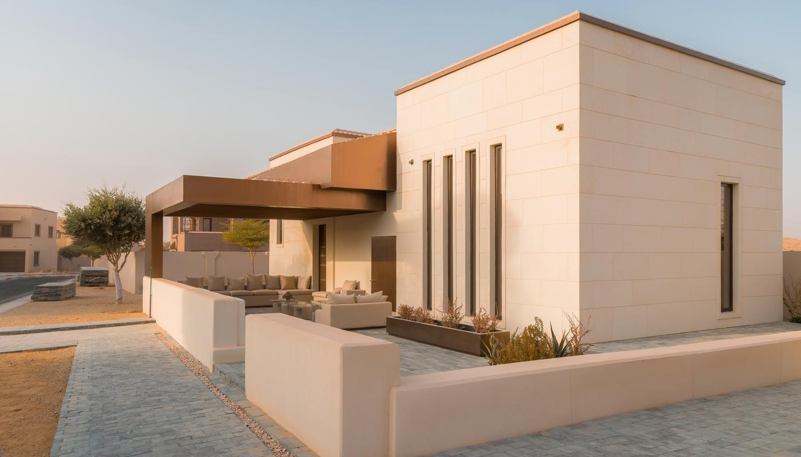

مقاول ملاحق الرياض لبناء مساحة تناسب احتياجك | 0502833163
هل تحتاج إلى مجلس مستقل للضيوف، أم ترغب في إضافة غرفة فوق السطح دون خسارة مساحة الحوش؟
تختلف تفاصيل بناء الملحق حسب موقعه واستخدامه وحالة العقار، ولذلك يبدأ اختيار مقاول ملاحق الرياض بتحديد المساحة المطلوبة والأعمال التي تحتاج إليها، ثم مراجعة الخامات والتشطيبات والميزانية قبل التنفيذ.
وسنوضح في مقالنا اليوم الفروق بين الملاحق الأرضية والعلوية، وكيف تختار طريقة البناء المناسبة، وما الذي يؤثر في التكلفة، وسنتناول خطوات التنفيذ وبنود الاتفاق التي تساعدك على تجهيز مساحة مريحة للاستخدام اليومي، وتجنب تعديلات يمكن اكتشاف الحاجة إليها قبل بدء البناء.

مقاول ملاحق الرياض لبناء مساحة تناسب احتياجك
يبدأ دور مقاول ملاحق الرياض بفهم الاستخدام المطلوب، فمجلس الضيوف يحتاج إلى توزيع جلوس ومدخل يحافظ على خصوصية المنزل، بينما تحتاج غرفة السكن إلى تهوية وتجهيزات تختلف عن مستودع أو مطبخ خارجي، ويؤثر اختيار الاستخدام في مواقع النوافذ والتمديدات ونوع الأرضيات.
ويشمل تحديد نطاق التنفيذ الاتفاق على أعمال الهيكل والعزل والكهرباء والسباكة والتشطيب، ثم بيان مسؤولية توريد المواد ورفع المخلفات وفحص الأعمال عند الاستلام، ويمنح توثيق التفاصيل صاحب العقار فرصة لمقارنة العروض دون الاكتفاء بمبلغ إجمالي يصعب معرفة محتوياته.
اختر موقع الملحق حسب استخدامه ومساحة العقار
يساعد تحديد موقع الملحق مبكرًا على استغلال المساحة دون تعطيل حركة السكان أو الوصول إلى الخدمات، ويشرح مقاول ملاحق علوية وأرضية بالرياض اختلاف متطلبات التنفيذ بين الحوش والسطح، ثم تُراجع إمكانية البناء وفق حالة العقار والمخططات والاشتراطات المطبقة. وتتنوع الاستخدامات التي يمكن بحثها قبل إعداد التصميم:
١. مجلس ضيافة داخل الحوش
يوفر المجلس المستقل خصوصية لاستقبال الضيوف، ويحتاج إلى مدخل مناسب ومواقع جلوس تسمح بالحركة، ويمكن تخصيص مساحة للمغاسل ودورة المياه حسب المساحة المسموح ببنائها، ويُراجع توزيع الأبواب حتى لا يتداخل الدخول إلى المجلس والحركة داخل المنزل.
٢. غرفة إضافية فوق السطح
تسمح غرفة السطح بإضافة مساحة للسكن أو العمل، لكن تنفيذها يبدأ بتقييم إنشائي للمبنى القائم، ويحتاج مقاول ملاحق علوية وأرضية بالرياض إلى التنسيق الفني قبل تحديد الهيكل والخامات، لأن خفة مواد البناء وحدها لا تكفي للحكم على سلامة الإضافة.
٣. مطبخ خارجي أو مساحة للخدمات
يحتاج المطبخ الخارجي إلى ترتيب نقاط المياه والصرف والكهرباء والتهوية، ويحدد مقاول ملاحق الرياض مواقع التجهيزات قبل إغلاق الجدران، ويُراعى اختيار أسطح يسهل تنظيفها وأرضيات تناسب الاستخدام، وتوفير الوصول إلى التمديدات عند الحاجة للصيانة.
٤. غرفة تخزين أو مكتب منزلي
تختلف متطلبات التخزين عن متطلبات المكتب، فالأول يحتاج إلى حماية المحتويات من الرطوبة وتجهيز مواقع الرفوف، بينما يحتاج المكتب إلى توزيع إنارة ومقابس ومكان مريح للجلوس، ويمنع تحديد الوظيفة مسبقًا إنفاق الميزانية على تجهيزات لن تُستخدم.
راجع التصميم قبل تثبيت المقاسات والخامات
يراجع أفضل مقاول ملاحق بالرياض احتياجات المستخدم قبل اقتراح تقسيم الغرف، ويطرح أسئلة عن عدد الأشخاص وطبيعة الاستخدام والأثاث والتكييف، ثم يُعرض التوزيع المقترح للمراجعة قبل التنفيذ، لأن نقل باب أو نقطة صرف لاحقًا يضيف أعمالًا وتكلفة. وتساعد مراجعة العناصر التالية على تقليل التعديلات:
١. الأبواب والنوافذ وحركة الدخول
يُختار مكان الباب حسب الوصول إلى الملحق والخصوصية المطلوبة، وتُوزع النوافذ للاستفادة من الإضاءة والتهوية دون كشف الجلسات الداخلية، ويُراجع مكان الأثاث حتى لا تقع نافذة أو فتحة باب في موضع يعوق الاستخدام.
٢. الحمام والمطبخ ونقاط الخدمات
تُراجع إمكانية ربط الصرف والمياه والكهرباء بالشبكات القائمة، ويشرح مقاول ملاحق علوية وأرضية بالرياض احتياجات التوصيل لكل موقع، كما يُحدد الوصول إلى المحابس ونقاط الصيانة قبل تغطية التمديدات بالتشطيبات.
٣. التكييف والإنارة والعزل
يؤثر اتجاه الشمس ومساحة النوافذ ونوع السقف في تجهيز التكييف والعزل، ويُنسق موقع الوحدة وتصريف مياهها ونقاط الكهرباء مبكرًا، ويُراجع توزيع الإنارة حسب الاستخدام بدل زيادة عدد الوحدات دون حاجة.
قارن أنظمة البناء قبل اختيار الملحق
يشرح مقاول ملاحق الرياض الفروق بين أنظمة البناء المتاحة، ويُحسم الاختيار حسب التصميم والأحمال والاستخدام ومتطلبات العزل والسلامة، ويحتاج كل نظام إلى تفاصيل تنفيذ مناسبة، ولذلك لا يصح تعميم أفضلية خامة لجميع المشروعات.
وتشمل الخيارات التي يمكن مناقشتها أثناء إعداد المواصفات:
١. الهيكل الخرساني والبلوك
يستخدم البناء التقليدي في مشروعات تناسبها متطلباته الإنشائية، وتُحدد أبعاد العناصر والتسليح والأساسات حسب التصميم، ويحتاج التنفيذ إلى وقت للأعمال الخرسانية وتجهيز الأسطح قبل التشطيب، كما يُراجع أثر الوزن عند اقتراحه فوق مبنى قائم.
٢. البلوك الخفيف
يمكن اختيار البلوك الخفيف عندما يلائم التصميم، ويحتاج إلى مواد تثبيت ولياسة وتفاصيل ربط مناسبة، ويشرح مقاول ملاحق علوية وأرضية بالرياض كيفية التعامل الفني معه، دون اعتبار انخفاض الوزن بديلًا عن فحص المبنى وتصميم الإضافة.
٣. الألواح الأسمنتية
تُستخدم الألواح الأسمنتية ضمن أنظمة جدران تعتمد على هيكل وتثبيت وطبقات محددة، وتحتاج الفواصل والزوايا والفتحات إلى تنفيذ دقيق، ويُراجع العزل داخل الجدار وتشطيب الواجهة حسب التعرض للشمس والمياه والاستخدام الداخلي.
٤. ألواح الساندوتش بانل
تتيح الألواح تنفيذ بعض الملاحق بنظام مختلف عن البناء التقليدي، ويُراجع نوع القلب العازل وخصائص الحريق والسماكات والتثبيت وإغلاق الوصلات، ويطلب أفضل مقاول ملاحق بالرياض مواصفات المنتج قبل تقديمه باعتباره مناسبًا للمشروع.
رتّب التنفيذ من تجهيز الموقع إلى الاستلام
ينظم مقاول تشطيب وبناء ملاحق بالرياض شمال وشرق أعمال الموقع حسب طبيعة المشروع، ويُحدد ترتيب دخول المواد والأعمال التي تؤثر في بعضها، حتى لا تُنفذ الأرضيات قبل الانتهاء من تمديدات تحتاج إلى تكسيرها.
وتتتابع مراحل العمل بحسب المخططات ونظام البناء المختار:
١. المعاينة ومراجعة إمكانية الإضافة
تُرفع المقاسات وتُراجع المخططات المتاحة وحالة الموقع، ثم تُحدد الحاجة إلى التقييم الإنشائي وإجراءات الترخيص، ويُراجع الوصول إلى السطح أو الحوش وأماكن الخدمات، ويستفيد مقاول ملاحق الرياض من الصور الأولية دون اعتبارها بديلًا عن المعاينة.
٢. الاتفاق على نطاق الأعمال
تُكتب المواصفات والكميات ومسؤولية التوريد وجدول الدفعات، ويُحدد التعامل مع التغييرات والأعمال الإضافية، ويساعد الاتفاق المكتوب على فهم تكلفة بناء ملحق بالرياض مع مقاول معتمد ومقارنة العروض وفق بنود متشابهة.
٣. تنفيذ الهيكل وتجهيز الخدمات
تُنفذ الأعمال الإنشائية وفق التصميم، ثم تُجهز تمديدات الكهرباء والمياه والصرف والتكييف، ويُنسق مقاول تشطيب وبناء ملاحق بالرياض شمال وشرق بين التخصصات، وتُراجع الأعمال قبل إخفائها باللياسة أو الألواح أو الأرضيات.
٤. العزل والتشطيبات
تُنفذ طبقات العزل حسب النظام المحدد وتُراجع الوصلات والفتحات والتصريف، ثم تبدأ التشطيبات المناسبة للاستخدام، ويُراعى الوقت المطلوب لجفاف المواد وتجهيز الأسطح قبل تركيب الأرضيات والدهانات والأبواب.
٥. الفحص وتسليم الملحق
تُفحص نقاط المياه والصرف والإنارة والأبواب والنوافذ والتشطيبات، وتُسجل الملاحظات وموعد إغلاقها، ويُسلّم مقاول تشطيب وبناء ملاحق بالرياض شمال وشرق المعلومات المتعلقة بالمواد والصيانة والضمان المتفق عليه.
افهم تكلفة الملحق قبل مقارنة الأسعار
تتغير تكلفة بناء ملحق بالرياض مع مقاول معتمد حسب المساحة والموقع وحالة المبنى ونوع الهيكل، وتزيد البنود عندما يشمل الملحق حمامًا أو مطبخًا أو تجهيزات خاصة، ولذلك لا يكفي سعر المتر وحده لتقدير مشروع لم تُحدد مواصفاته.
ويُراجع أفضل مقاول ملاحق بالرياض مستوى التشطيب المطلوب، ثم يوضح الخيارات التي يمكن تغييرها دون التأثير في متطلبات السلامة، مثل الأرضيات والأبواب وبعض عناصر الديكور، ويتيح ترتيب الأولويات توجيه الميزانية للأعمال الأكثر ارتباطًا بالاستخدام.
وتشمل مراجعة تكلفة بناء ملحق بالرياض مع مقاول معتمد معرفة ما إذا كان العرض يتضمن المخططات والإشراف والتراخيص والتوريد والنقل ورفع المخلفات والضريبة، ثم تُحدد البنود المستثناة حتى لا تظهر مصروفات لم تدخل في المقارنة.
ويشرح مقاول ملاحق الرياض أثر إضافة طلبات أثناء التنفيذ، كما تُراجع تكلفة بناء ملحق بالرياض مع مقاول معتمد عند تعديل المساحة أو الخامات أو التجهيزات، ويُوثق السعر والمدة الإضافيان قبل تنفيذ التغيير.
قيم خبرة المقاول من تفاصيل عرضه وأعماله
يساعد البحث عن أفضل مقاول ملاحق بالرياض على جمع خيارات، ثم تبدأ المقارنة بمشروعات يمكن التحقق منها ومواصفات قابلة للمراجعة، ويُطلب شرح طريقة التنفيذ بدل الاكتفاء بعبارات الجودة والسعر المناسب.
ويحتاج اختيار مقاول تشطيب وبناء ملاحق بالرياض شمال وشرق إلى التأكد من تغطية موقع العقار وإمكانية متابعة العمل، ويُراجع اسم الجهة في العقد وبياناتها ومسؤولية الإشراف وشروط الضمان، وتُحدد الدفعات حسب مراحل متفق عليها.
ويستحق التحقق من الاعتماد اهتمامًا عند مناقشة تكلفة بناء ملحق بالرياض مع مقاول معتمد، فذكر الصفة في إعلان لا يوضح نوعها أو نطاقها، ويُطلب ما يثبتها قبل الاعتماد عليها في قرار التعاقد.
اطلب تفاصيل ملحقك عبر خدمات الرياض
تحتاج البداية إلى وصف يوضح المطلوب، ويتيح موقع خدمات الهدم والترميم في الرياض إرسال تفاصيل موقع العمل ونوع الطلب عبر واتساب، ويمكن مشاركة صور الحوش أو السطح والمقاسات التقريبية والاستخدام المطلوب لبحث نطاق الخدمة وترتيب الخطوة التالية.
ويبدأ البحث عن رقم مقاول بناء ملاحق في الرياض ممتاز برغبة في الوصول إلى جهة تفهم المشروع، ويساعد تجهيز الصور واسم الحي وعدد الغرف على جعل التواصل أكثر فائدة، كما يمكن توضيح الحاجة إلى تجهيز الموقع أو التكسير أو رفع المخلفات ضمن الطلب.
ويستفيد الباحث عن رقم مقاول بناء ملاحق في الرياض ممتاز من السؤال عن إمكانية تنفيذ الأعمال المطلوبة وتوافر المعاينة، ويستطيع طلب تفاصيل البنود التي تدخل في العرض قبل الاتفاق، ثم مقارنة الخيارات على أساس الخدمة والمواصفات.
تواصل معنا على 0502833163 وأرسل موقع العقار وصور المساحة وفكرة الملحق الذي ترغب في بنائه، واذكر احتياجات التجهيز والتشطيب لبحث التفاصيل المطلوبة قبل البداية.
الخاتمة
يساعد تحديد الاستخدام والمقاسات والميزانية على مناقشة المشروع بصورة أفضل، ويتيح اختيار مقاول ملاحق الرياض مراجعة نظام البناء والتشطيب والخدمات قبل التنفيذ، كما تستفيد من تجهيز التفاصيل عند التواصل مع مقاول ملاحق علوية وأرضية بالرياض أو مقاول تشطيب وبناء ملاحق بالرياض شمال وشرق.
ويظل البحث عن رقم مقاول بناء ملاحق في الرياض ممتاز خطوة أولى، ويكتمل القرار بمراجعة الأعمال والاتفاق المكتوب، ثم مقارنة عروض أفضل مقاول ملاحق بالرياض حسب نطاقها الفعلي، حتى تحصل على مساحة تناسب احتياجك وتعرف مسؤولية كل طرف طوال التنفيذ.
الأسئلة الشائعة
كم تكلفة بناء ملحق في الرياض؟
تعتمد التكلفة على المساحة ونظام البناء والتشطيب وتجهيز المياه والكهرباء وحالة الموقع، ويُفضل طلب عرض مفصل بعد المعاينة، لأن مقارنة المبلغ الإجمالي دون معرفة البنود لا تكشف الفروق بين العروض.
هل أحتاج رخصة لبناء ملحق فوق السطح؟
تحتاج الإضافة إلى مراجعة الرخصة والاشتراطات المطبقة على العقار، وتتيح منصة بلدي خدمة إضافة وتعديل مكونات البناء، ويحدد المكتب الهندسي الإجراء المناسب حسب حالة المبنى ونوع الإضافة المطلوبة.
هل يمكن بناء ملحق فوق أي منزل؟
تتوقف إمكانية البناء على نتيجة التقييم الإنشائي والمخططات والاشتراطات، ويُفحص تحمل العناصر القائمة قبل اعتماد الإضافة، كما تُراجع الأحمال حتى عند اختيار خامات أخف من البناء التقليدي.
هل يحتاج ملحق السطح إلى عزل خاص؟
يحتاج إلى نظام عزل يناسب السقف والجدران والفتحات وطريقة البناء، وتُراجع مقاومة تسرب المياه والتعرض للحرارة وتصريف الأمطار، ويُحدد النظام أثناء التصميم قبل بدء التشطيب.
هل يمكن استلام الملحق جاهزًا للاستخدام؟
يمكن الاتفاق على تنفيذ يشمل الهيكل والخدمات والعزل والتشطيب، ويجب تحديد التجهيزات الداخلة في السعر والمستثناة منه، ويطرح الباحث عن رقم مقاول بناء ملاحق في الرياض ممتاز السؤال قبل مقارنة العروض.
كيف أجهز طلبي قبل الاتصال بالمقاول؟
جهّز اسم الحي وصور الموقع والمقاسات التقريبية والاستخدام وعدد الغرف والتجهيزات المطلوبة، ثم دوّن أسئلتك عن المعاينة والتكلفة والمدة، ويساعد ذلك عند البحث عن رقم مقاول بناء ملاحق في الرياض ممتاز لبدء مناقشة تفاصيل مشروعك.
مقالات ذات صلة قد تفيدك
- مقاول ملاحق وترميم بالرياض | بناء وتجديد الفلل
- مقاول ملاحق اسمنت بورد بالرياض | التركيب والتكلفة
- مقاول بناء مجلس خارجي قرميد بالرياض | التنفيذ والعزل
- خدمات ترميم المباني بالرياض
تحتاج معاينة أو عرض سعر لمشروعك؟
أرسل لنا مساحة المشروع وموقعه ونوع الأعمال المطلوبة، وسنساعدك على تحديد الخطوة التالية.
اطلب التواصل الآن